Physical · batch
F07 · Temporal audit vs batch day
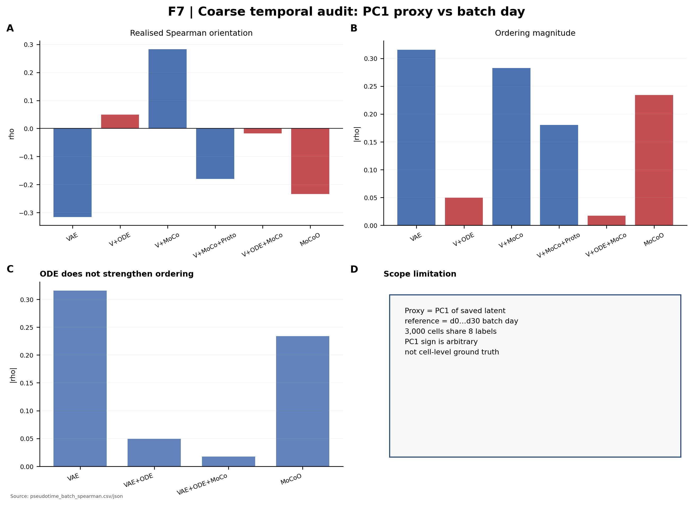
Figures
Fig 7 is first among physical. Everything else is architecture, embedding, or metrics. No new Python “biology” defaults. No live R. No GPU baseline tiles.
Physical · batch

Physical · batch of origin
Carrier float whose plotted axis is batch of origin. Low iLISI (0.117–0.167 in Table II) means batches are not mixed. ODE degradation is reported as a limitation. Embedding movement is still not cell-state proof.
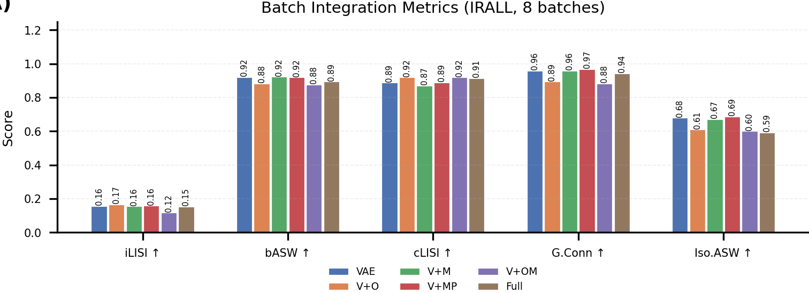
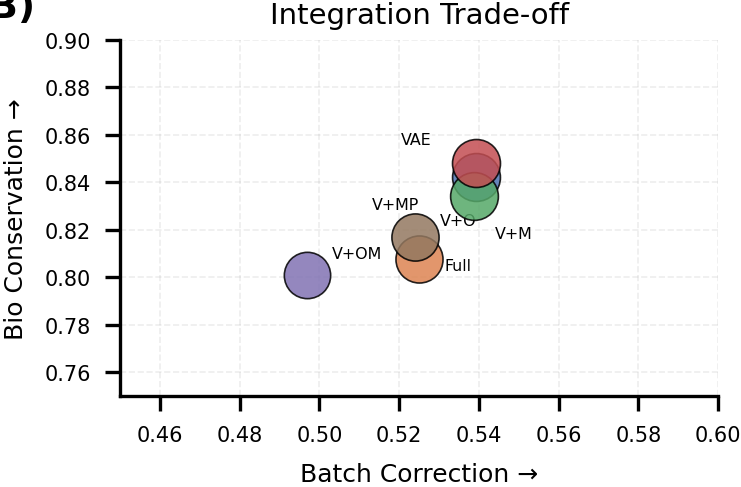
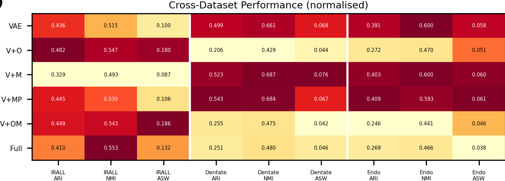
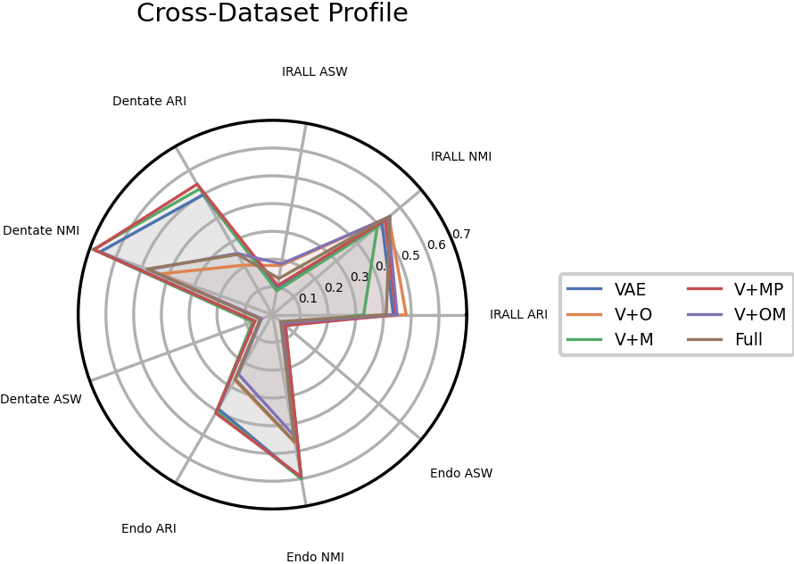
Assets: benchmarks/figures/fig7_batch_integration/panelA–D.png. Not a batch-correction claim.
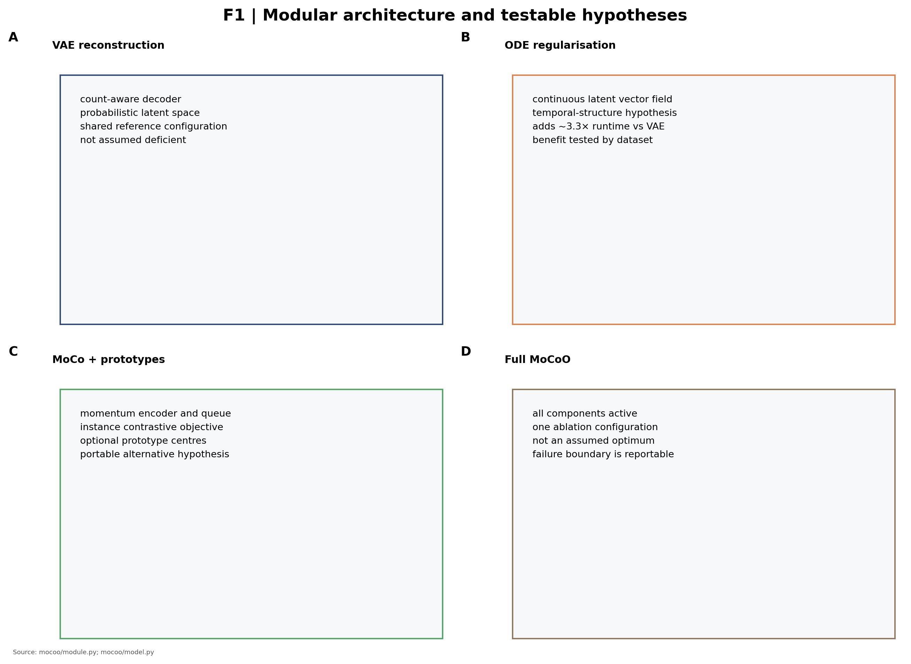
Embedding · metrics
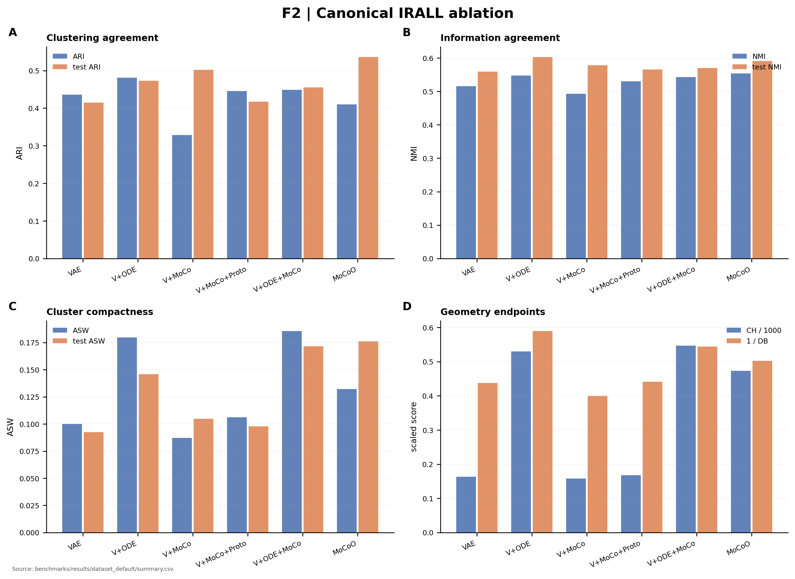
Not independent biological validation. Scores of a contrastive+ODE embedding.
Metrics
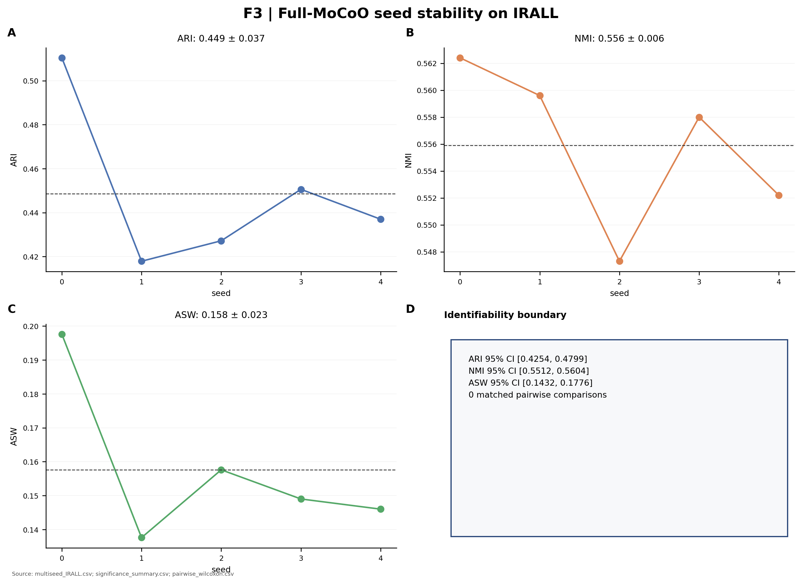
Training
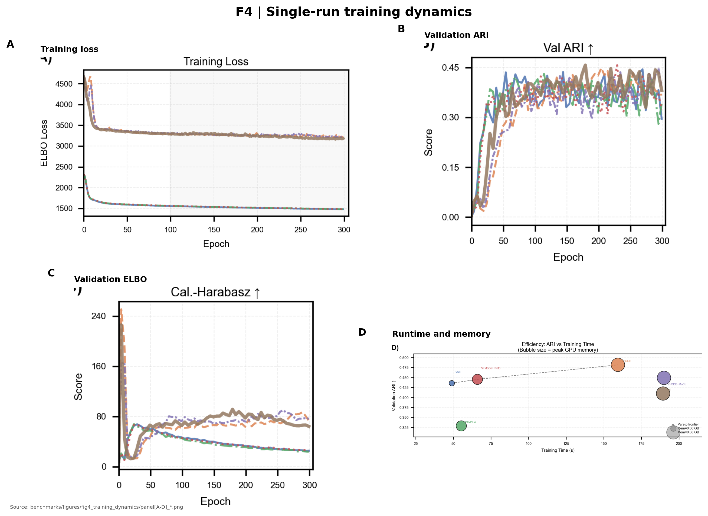
Ablation
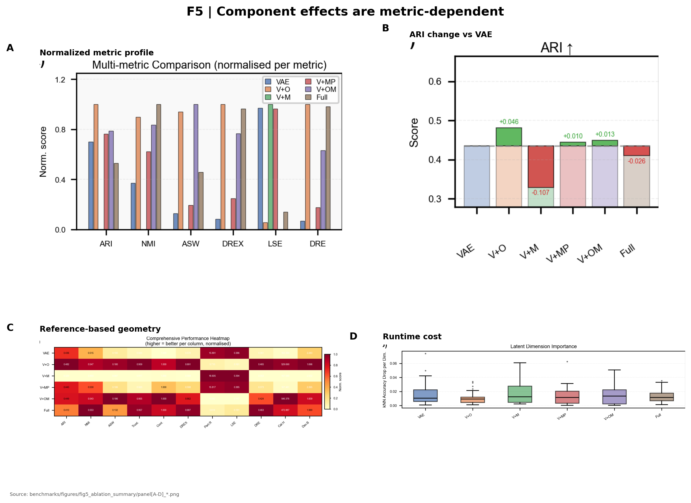
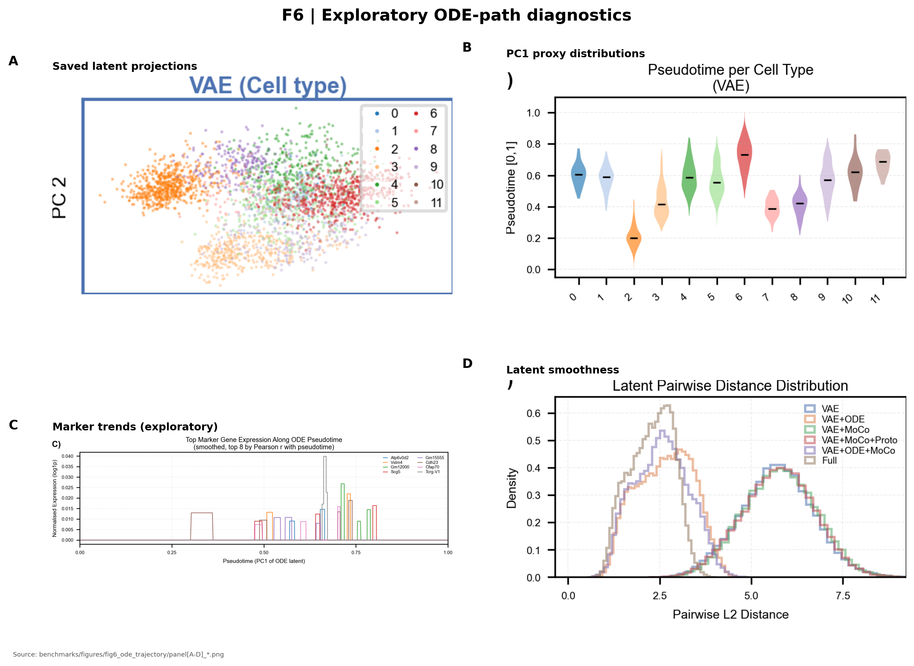
Not independent biological validation. Not a cell-state proof.
PCA floor
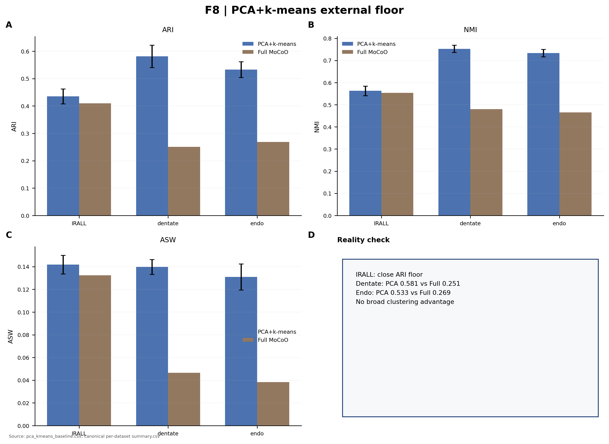
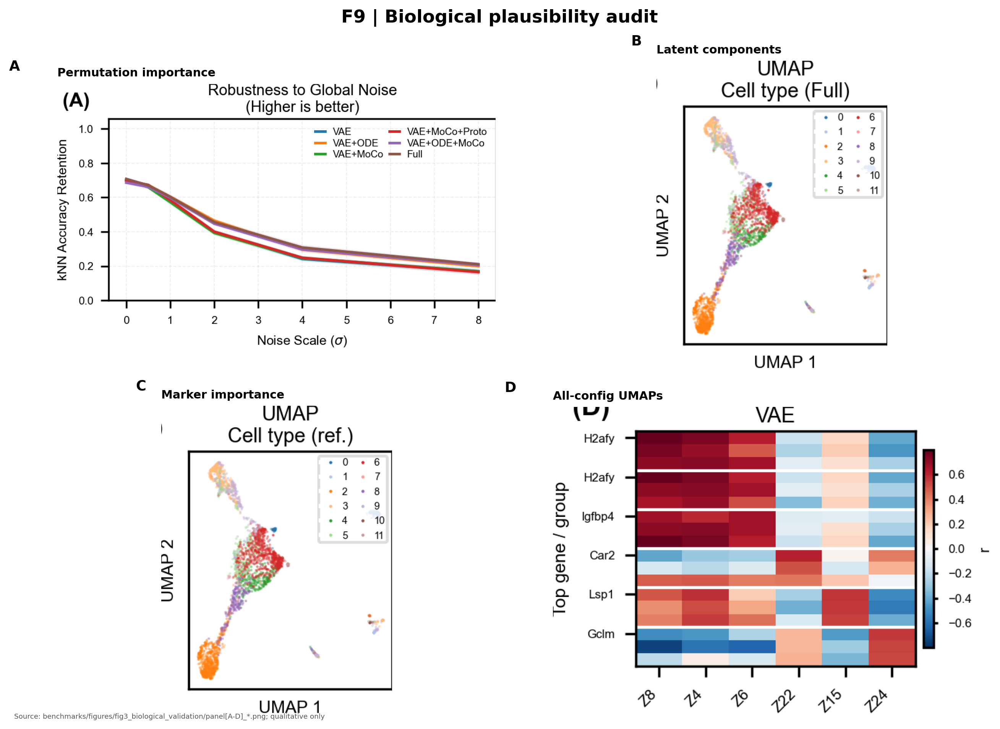
UMAP / marker theater is not cell-state proof. EmbeddingNotState: the axis is still the learned latent.
Completeness
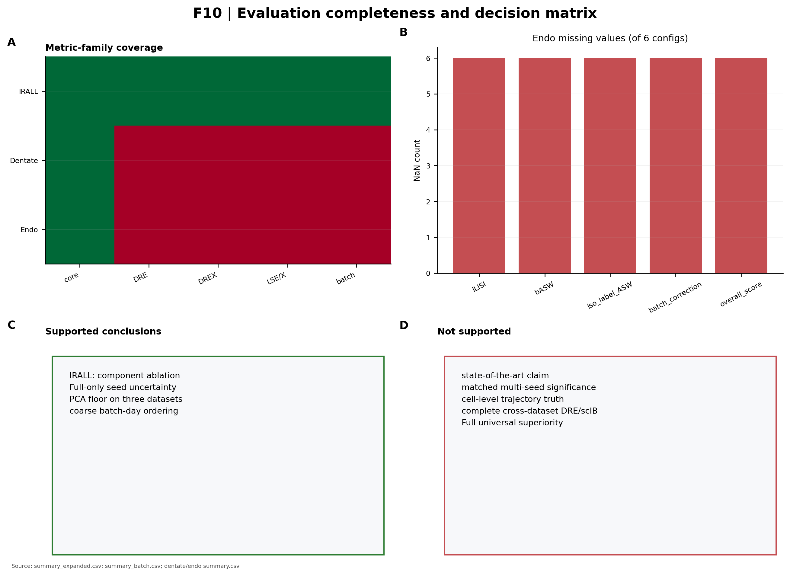